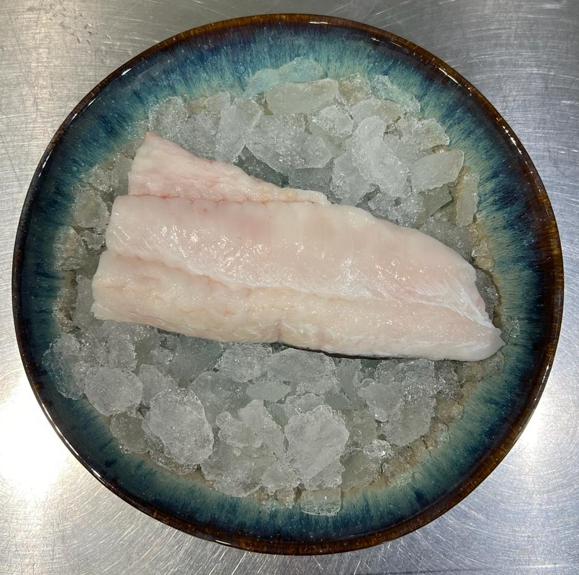
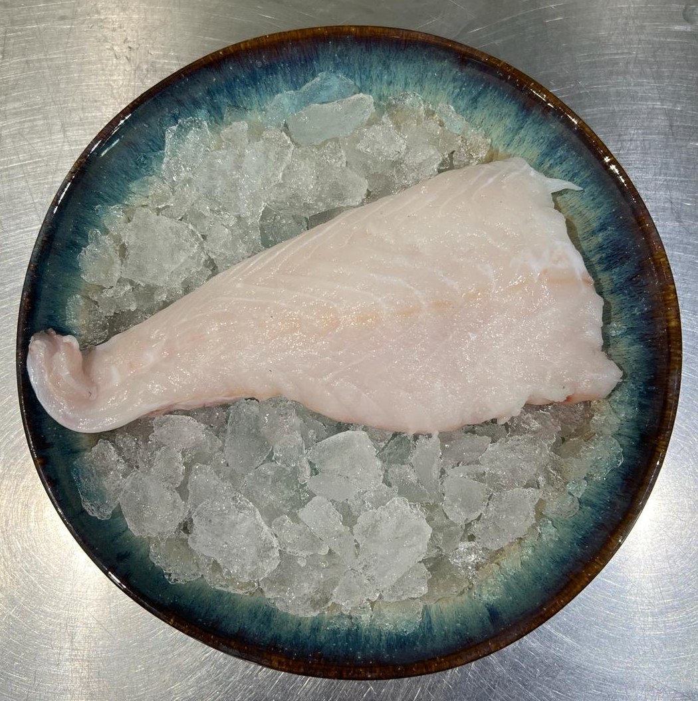
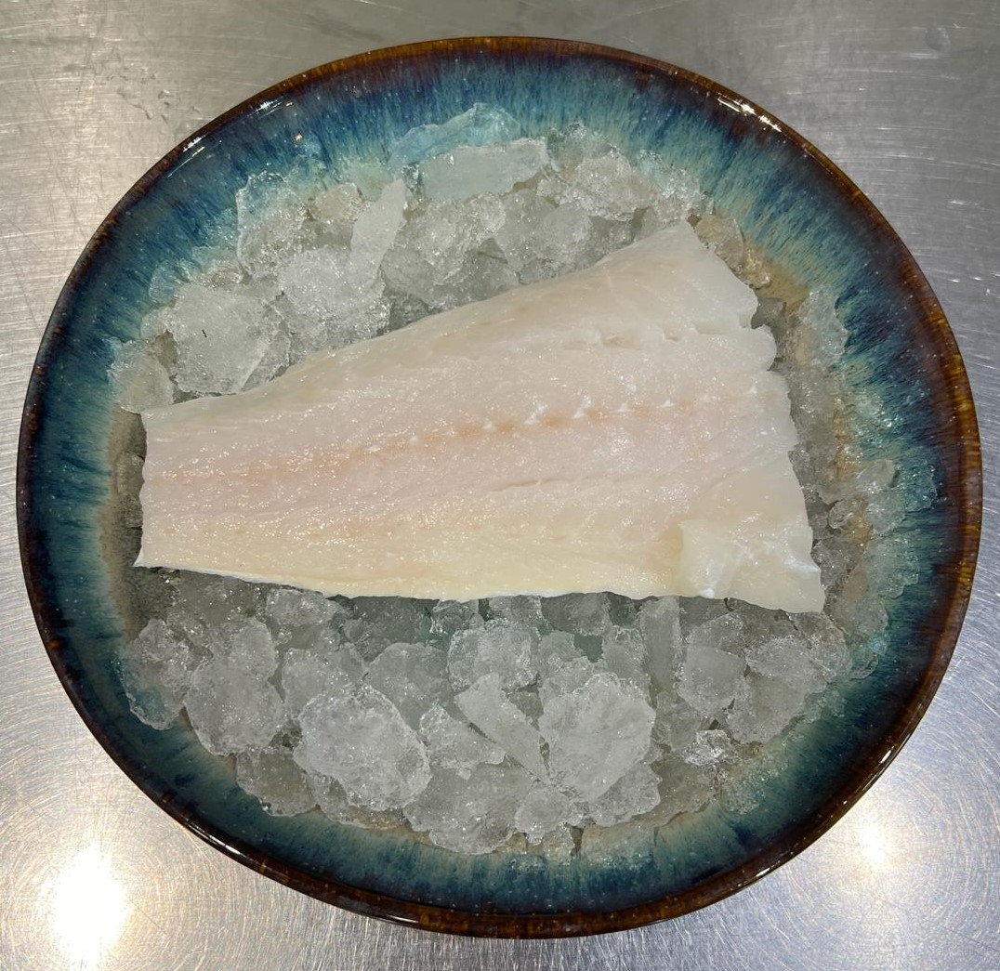
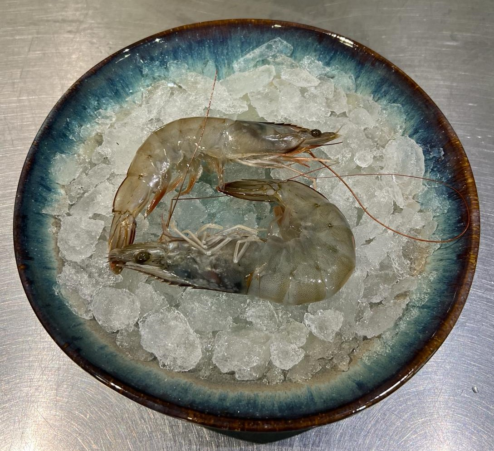

.png)
Want to find high-quality seafood? Our fresh salmon contributes to many of its benefits. We use sustainable sources for our salmon fillet, guaranteeing an excellent taste and a soft texture. Our salmon contains omega-3, vitamins, and other elements that promote a healthy lifestyle. Order our fresh salmon fillet in our shop today to see how such an exclusive fish can enhance your meal.
Experience the flavor of hake at our shop. Renowned for its taste and tender texture hake is a versatile seafood option that complements a range of seasonings and cooking styles. Handpicked from waters and skillfully cooked our hake guarantees an adventure unlike any other. Whether you prefer it grilled, baked or pan seared each mouthful ensures enjoyment. Stop by today to savor the taste of hake.
Immerse yourself in the exquisite flavors of our signature salmon burger, where salmon takes center stage. Crafted with a generous 85% portion of succulent salmon, blended harmoniously with breadcrumbs, chives, dill, salt, and black pepper, each bite unveils a symphony of gourmet delights. Our chefs meticulously balance the richness of salmon with the aromatic nuances of herbs and spices, resulting in a culinary masterpiece that's both indulgent and refined. Grilled to perfection, our salmon-centric burger promises a delectable journey for your taste buds. Treat yourself to the ultimate gourmet experience and discover the allure of our salmon-centric creation today.
Take a culinary trip with our magnificent monkfish, a hidden gem from the ocean's depths. Monkfish is a true delicacy that thrills seafood lovers all over the world because of its solid texture and delicate flavor. We offer you the best monkfish at our seafood emporium, skillfully prepared to maintain its flavor and succulence. Every mouthful of monkfish, whether it's pan-seared, perfectly grilled, or added to flavorful stews, is a sensory explosion of taste. Savor the luxury of monkfish and take your dining experience to a whole new level. Come see us now and experience the charm of this gastronomic treasure.
Have you tried our native flat oysters? This incredible oyster is full of flavor and incomparable freshness. In each succulent oyster you can feel the essence of the ocean, it can be enjoyed raw, chilled or even gratin with cheese. Our oysters have an incomparable flavor and promise an incredible culinary experience. Come check out our incredible native flat oyster.
Enjoy our fresh cod, which has a delicate flavor and incredible texture. Cod is an incredible fish to be cooked in the oven with potatoes, tomato sauce, and some peppers. This delicious fish can be served with any side dish. Come and check out this succulent cod in our store.

With a firm and robust texture, our incredible Swordfish has an unparalleled flavor, with an exotic touch as it is a fish from the depths of the ocean. Our Espadarte was chosen very carefully to bring the best to our store. This fish is incredible grilled on a barbecue, or just fried with some garlic and onion. Come check out this incredible Swordfish in our store.
This is our "Gambas", It has this name to differentiate it from conventional shrimp because it is larger. This crustacean is very succulent and can be enjoyed on the grill, in a seafood stew, or in an incredible paella. This "Gambas" has a delicate flavor and a firm texture, it's an incredible feeling when you eat one. Try this incredible crustacean that is a true explosion of flavors, available in our store.
Fire up the grill and try our incredible shrimp skewer with a ginger, chilli, and lime sauce. This recipe is made to make your barbecue more delicious with an indescribable flavor, mixing the juiciness of the shrimp with the sweetness and spiciness of the sauce. Gather your friends this summer and enjoy a good get-together with them while enjoying our skewers. Come and check out our skewers in our store, If you prefer other sauces we also have some options.